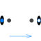

PartialTwoPortFlowBase class for distributed flow models |

|
Diagram
{kind=link}
Information
This information is part of the Modelica Standard Library maintained by the Modelica Association.
Base class for distributed flow models. The total volume is split into nNodes segments along the flow path. The default value is nNodes=2.
Mass and Energy balances
The mass and energy balances are inherited from Interfaces.PartialDistributedVolume. One total mass and one energy balance is formed across each segment according to the finite volume approach. Substance mass balances are added if the medium contains more than one component.
An extending model needs to define the geometry and the difference in heights between the flow segments (static head). Moreover it needs to define two vectors of source terms for the distributed energy balance:
Qb_flows[nNodes], the heat flow source terms, e.g., conductive heat flows across segment boundaries, andWb_flows[nNodes], the work source terms.
Momentum balance
The momentum balance is determined by the FlowModel component, which can be replaced with any model extended from
BaseClasses.FlowModels.PartialStaggeredFlowModel.
The default setting is DetailedPipeFlow.
This considers
- pressure drop due to friction and other dissipative losses, and
- gravity effects for non-horizontal devices.
- variation of flow velocity along the flow path,
which occur due to changes in the cross sectional area or the fluid density, provided that
flowModel.use_Ib_flowsis true.
Model Structure
The momentum balances are formulated across the segment boundaries along the flow path according to the staggered grid approach.
The configurable modelStructure determines the formulation of the boundary conditions at port_a and port_b.
The options include (default: av_vb):
av_vb: Symmetric setting with nNodes-1 momentum balances between nNodes flow segments. The portsport_aandport_bexpose the first and the last thermodynamic state, respectively. Connecting two or more flow devices therefore may result in high-index DAEs for the pressures of connected flow segments.a_v_b: Alternative symmetric setting with nNodes+1 momentum balances across nNodes flow segments. Half momentum balances are placed betweenport_aand the first flow segment as well as between the last flow segment andport_b. Connecting two or more flow devices therefore results in algebraic pressures at the ports. The specification of good start values for the port pressures is essential for the solution of large nonlinear equation systems.av_b: Asymmetric setting with nNodes momentum balances, one between nth volume andport_b, potential pressure state atport_aa_vb: Asymmetric setting with nNodes momentum balance, one between first volume andport_a, potential pressure state atport_b
When connecting two components, e.g., two pipes, the momentum balance across the connection point reduces to
pipe1.port_b.p = pipe2.port_a.p
This is only true if the flow velocity remains the same on each side of the connection. Consider using a fitting for any significant change in diameter or fluid density, if the resulting effects, such as change in kinetic energy, cannot be neglected. This also allows for taking into account friction losses with respect to the actual geometry of the connection point.
Parameters (30)
| allowFlowReversal |
Value: system.allowFlowReversal Type: Boolean Description: = true to allow flow reversal, false restricts to design direction (port_a -> port_b) |
|---|---|
| n |
Value: nNodes Type: Integer Description: Number of discrete volumes |
| energyDynamics |
Value: system.energyDynamics Type: Dynamics Description: Formulation of energy balances |
| massDynamics |
Value: system.massDynamics Type: Dynamics Description: Formulation of mass balances |
| substanceDynamics |
Value: massDynamics Type: Dynamics Description: Formulation of substance balances |
| traceDynamics |
Value: massDynamics Type: Dynamics Description: Formulation of trace substance balances |
| p_a_start |
Value: system.p_start Type: AbsolutePressure (Pa) Description: Start value of pressure at port a |
| p_b_start |
Value: p_a_start Type: AbsolutePressure (Pa) Description: Start value of pressure at port b |
| ps_start |
Value: if n > 1 then linspace(p_a_start, p_b_start, n) else {(p_a_start + p_b_start) / 2} Type: AbsolutePressure[n] (Pa) Description: Start value of pressure |
| use_T_start |
Value: true Type: Boolean Description: Use T_start if true, otherwise h_start |
| T_start |
Value: if use_T_start then system.T_start else Medium.temperature_phX((p_a_start + p_b_start) / 2, h_start, X_start) Type: Temperature (K) Description: Start value of temperature |
| h_start |
Value: if use_T_start then Medium.specificEnthalpy_pTX((p_a_start + p_b_start) / 2, T_start, X_start) else Medium.h_default Type: SpecificEnthalpy (J/kg) Description: Start value of specific enthalpy |
| X_start |
Value: Medium.X_default Type: MassFraction[Medium.nX] (kg/kg) Description: Start value of mass fractions m_i/m |
| C_start |
Value: Medium.C_default Type: ExtraProperty[Medium.nC] Description: Start value of trace substances |
| nParallel |
Value: 1 Type: Real Description: Number of identical parallel flow devices |
| lengths |
Value: Type: Length[n] (m) Description: lengths of flow segments |
| crossAreas |
Value: Type: Area[n] (m²) Description: cross flow areas of flow segments |
| dimensions |
Value: Type: Length[n] (m) Description: hydraulic diameters of flow segments |
| roughnesses |
Value: Type: Roughness[n] (m) Description: Average heights of surface asperities |
| dheights |
Value: zeros(n) Type: Length[n] (m) Description: Differences in heights of flow segments |
| momentumDynamics |
Value: system.momentumDynamics Type: Dynamics Description: Formulation of momentum balances |
| m_flow_start |
Value: system.m_flow_start Type: MassFlowRate (kg/s) Description: Start value for mass flow rate |
| nNodes |
Value: 2 Type: Integer Description: Number of discrete flow volumes |
| modelStructure |
Value: Types.ModelStructure.av_vb Type: ModelStructure Description: Determines whether flow or volume models are present at the ports |
| useLumpedPressure |
Value: false Type: Boolean Description: =true to lump pressure states together |
| nFM |
Value: if useLumpedPressure then nFMLumped else nFMDistributed Type: Integer Description: number of flow models in flowModel |
| nFMDistributed |
Value: if modelStructure == Types.ModelStructure.a_v_b then n + 1 else if modelStructure == Types.ModelStructure.a_vb or modelStructure == Types.ModelStructure.av_b then n else n - 1 Type: Integer |
| nFMLumped |
Value: if modelStructure == Types.ModelStructure.a_v_b then 2 else 1 Type: Integer |
| iLumped |
Value: integer(n / 2) + 1 Type: Integer Description: Index of control volume with representative state if useLumpedPressure |
| useInnerPortProperties |
Value: false Type: Boolean Description: =true to take port properties for flow models from internal control volumes |
Inputs (1)
| fluidVolumes |
Default Value: array(crossAreas[i] * lengths[i] for i in 1:n) * nParallel Type: Volume[n] (m³) Description: Discretized volume, determine in inheriting class |
|---|
Connectors (2)
| port_a |
Type: FluidPort_a Description: Fluid connector a (positive design flow direction is from port_a to port_b) |
|
|---|---|---|
| port_b |
Type: FluidPort_b Description: Fluid connector b (positive design flow direction is from port_a to port_b) |
Components (6)
| system |
Type: System Description: System properties |
|
|---|---|---|
| mediums |
Type: BaseProperties[n] |
|
| state_a |
Type: ThermodynamicState Description: state defined by volume outside port_a |
|
| state_b |
Type: ThermodynamicState Description: state defined by volume outside port_b |
|
| statesFM |
Type: ThermodynamicState[nFM + 1] Description: state vector for flowModel model |
|
| flowModel |
Type: FlowModel Description: Flow model |
Extended by (1)
|
Modelica.Fluid.Pipes
Dynamic pipe model with storage of mass and energy |